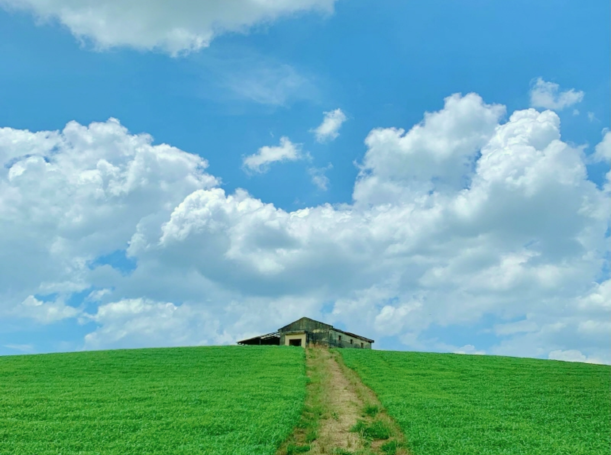
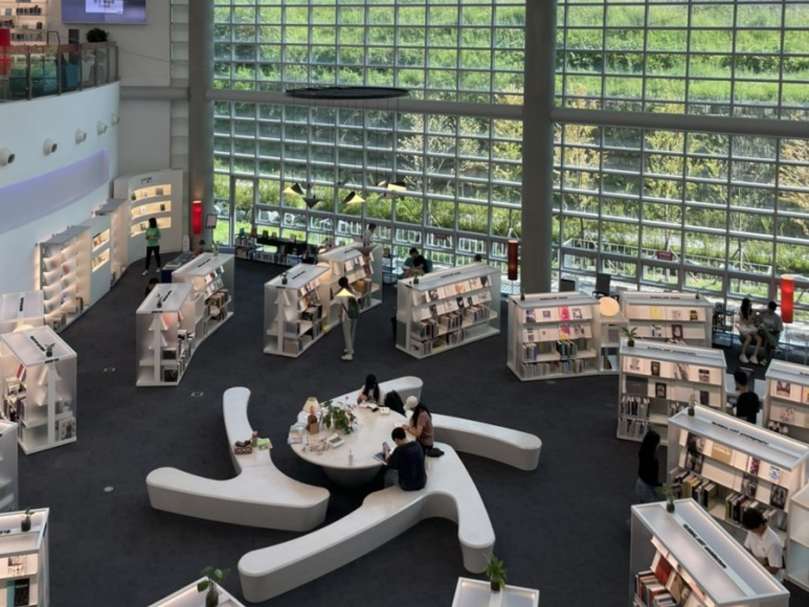

드라마 여행
인기 드라마 "그 해 우리는"
속 유명 촬영지를 그대로 여행해보세요!
그 해 우리는 여행지 둘러보기

-

- 천북폐목장 청보리밭
- 999+ 999+
- 충남 보령시 천북면 천광로 73-22
- 보령시 천북면에 위치한 천북폐목장 청보리밭은 네비게이션에 '천북 신흥교회'로 검색하고 찾아올 수 있다. 드라마 촬영 장소로 사용된 이 폐목장 자리는 개인 사유지로 SNS 상에서 사진 찍기 좋은 곳으로 입소문이 나서 인생사진을 남기러 방문하는 사람이 많아졌다.
-

- 의정부미술도서관
- 999+ 999+
- 경기도 의정부시 민락로 248
- 기존 도서관의 편견을 깨는 독특한 테마와 매력적인 디자인으로 새로운 명소가 되고 있는 곳이다. 국내 최초의 미술 도서관이 있으며, 음악 도서관은 CD, LP, DVD, 악보 등 비도서 자료가 가득하고, LP청음까지 할 수 있어 예술을 좋아하는 사람들에게 추천한다.